Kelvin Xu*,
Jimmy Lei Ba†,
Ryan Kiros†,
Kyunghyun Cho*, Overview
In this work, we introduced an "attention" based framework into the problem of image caption generation. Much in the same way human vision fixates when you perceive the visual world, the model learns to "attend" to selective regions while generating a description. Furthermore, in this work we explore and compare two variants of this model: a deterministic version trainable using standard backpropagation techniques and a stochastic variant trainable by maximizing a variational lower bound. How does it work?
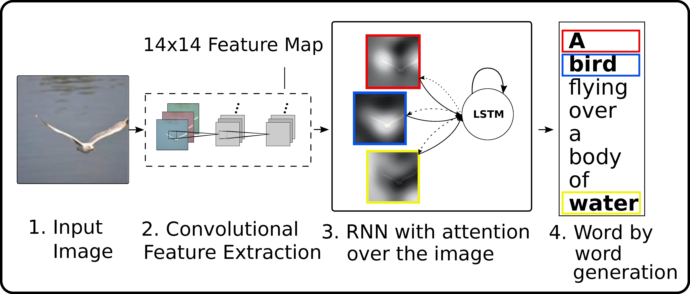 Above: From a high level, the model uses a convolutional neural network as a feature extractor, then uses a recurrent neural network with attention to generate the sentence.
For a roadmap and a collection of material explaining some of the networks used in this work, see the following on convolutional and recurrent neural networks. The model in action
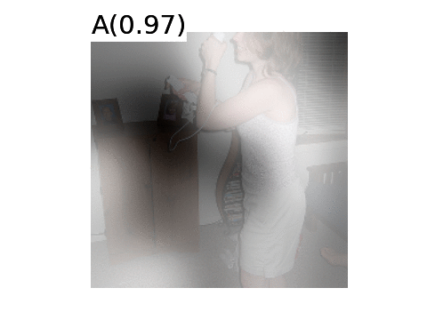
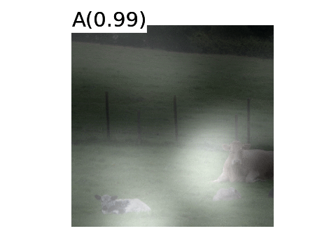
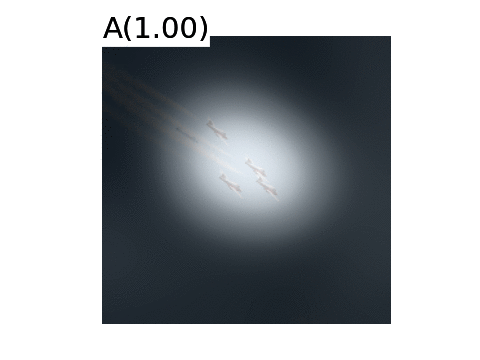
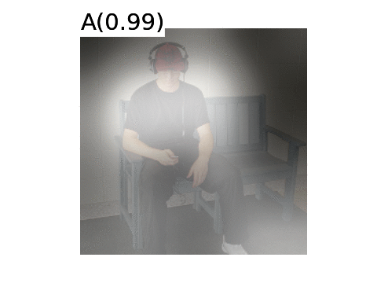
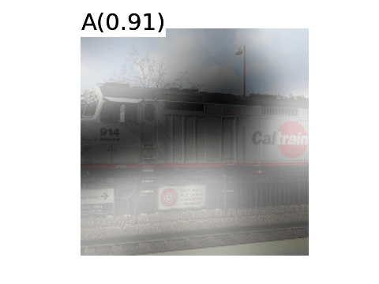
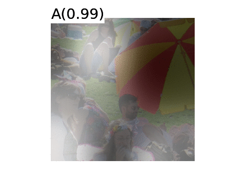
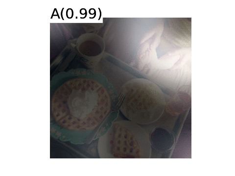
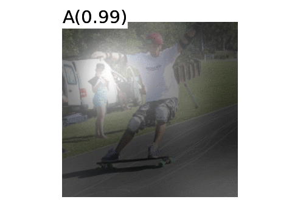
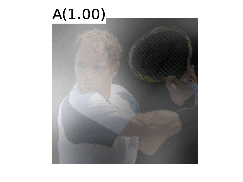
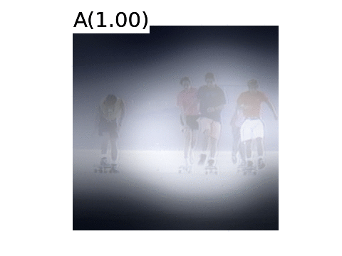
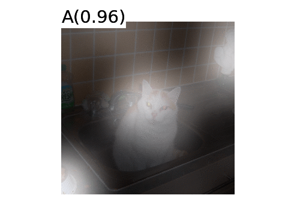
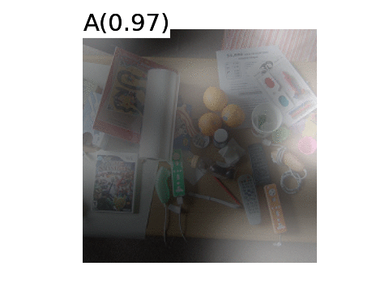
Want all details? Interested in what else we've been up to? Please check out the following technical report and visit the pages of the authors:
K. Xu , J. Ba, R. Kiros, K. Cho, A. Courville, R. Salakhutdinov, R. Zemel, Y. Bengio Or contact us Code |